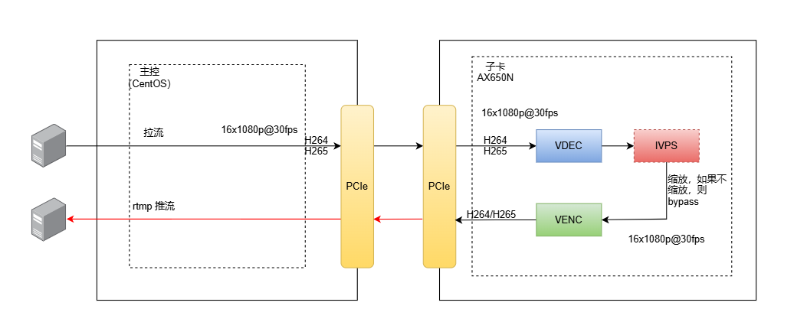

4. AXCL API#
4.1. 概览#
AXCL API 分为两部分，第一部分是 Runtime API，第二部分是 Native API。其中 Runtime API 是独立的 API 组合，目前仅包含用于内存管理的 Memory 和用于驱动 爱芯通元(TM) NPU 工作的 Engine API。当 AXCL API 被用于计算卡形态，不使用编解码功能时，只使用 Runtime API 即可完成全部计算任务。当需要使用编解码功能时，需要了解 Native API 及 FFMPEG 模块的有关内容。
4.2. Runtime API#
使用 Runtime API 可以在宿主系统上调用 NPU 完成计算功能，其中 Memory API 可以分别在宿主和计算卡上申请释放内存空间，Engine API 可以完成模型初始化、IO 设置到推理的全部 NPU 功能。
4.2.1. Runtime API#
4.2.1.1. axclInit#
axclError axclInit(const char *config);
使用说明：
系统初始化，同步接口。
参数：
config [IN]：指定json配置文件路径。用户可以通过json配置文件配置系统参数，目前支持日志级别，格式参阅FAQ。
允许传入NULL或者不存在的json文件，则系统使用默认配置。
限制：
和
axclFinalize成对调用对系统清理。当调用任何AXCL接口开发应用时，必须首先调用本接口。
一个进程内只调用一次本接口。
4.2.1.2. axclFinailze#
axclError axclFinalize();
使用说明：
系统去初始化，释放进程内AXCL的资源，同步接口。
限制：
和
axclInit成对调用。应用进程退出前，应显示调用本接口去初始化。
对于C++应用，不建议在析构函数中调用，否则在进程退出时可能因为单例析构顺序不确定导致进程异常退出。
4.2.1.3. axclrtGetVersion#
axclError axclrtGetVersion(int32_t *major, int32_t *minor, int32_t *patch);
使用说明：
查询系统版本号，同步接口。
参数：
major [OUT]：主版本号。minor[OUT]：子版本号。patch [OUT]：patch版本号。
限制：
无特别限制。
4.2.1.4. axclrtGetSocName#
const char *axclrtGetSocName();
使用说明：
查询当前的芯片SOC字符串名，同步接口。
限制：
无特别限制。
4.2.1.5. axclrtSetDevice#
axclError axclrtSetDevice(int32_t deviceId);
使用说明：
指定当前进程或线程中的设备，同时隐式创建默认Context，同步接口。
参数：
deviceId [IN]：设备ID。
限制：
本接口内部隐式创建默认Context，该Context由系统在
axclrtResetDevice自动回收，不能调用axclrtDestroyContext显示销毁。在同一个进程的多个线程中，如果调用本接口指定的deviceId是同一个，那么隐式创建的Context也是同一个。
和
axclrtResetDevice成对调用释放本进程使用的设备资源，内部通过引用计数允许多次调用，仅当引用计数为0时释放资源。多Device场景下，可以在进程中通过本接口或
axclrtSetCurrentContext切换Device。
4.2.1.6. axclrtResetDevice#
axclError axclrtResetDevice(int32_t deviceId);
使用说明：
复位设备，释放设备上的资源，包含隐式或显示创建的Context，同步接口。
参数：
deviceId [IN]：设备ID。
限制：
axclrtCreateContext显示创建的Context，推荐axclrtDestroyContext显示销毁后再调用本接口释放设备资源。和
axclrtSetDevice成对使用，系统将自动回收默认的Context资源。内部通过引用计数允许多次调用，仅当引用计数为0时释放资源。
应用进程退出要确保
axclrtResetDevice被调用，特别是异常信号捕获处理后，否则会导致C++抛出terminated abort异常。
4.2.1.7. axclrtGetDevice#
axclError axclrtGetDevice(int32_t *deviceId);
使用说明：
获取当前正在使用的设备ID，同步接口。
参数：
deviceId [OUT]：设备ID。
限制：
如果没有调用
axclrtSetDevice或者axclrtCreateContext指定设备，本接口返回错误。
4.2.1.8. axclrtGetDeviceCount#
axclError axclrtGetDeviceCount(uint32_t *count);
使用说明：
获取连接的设备总个数，同步接口。
参数：
count [OUT]：设备个数。
限制：
无特别限制。
4.2.1.9. axclrtGetDeviceList#
axclError axclrtGetDeviceList(axclrtDeviceList *deviceList);
使用说明：
获取全部连接的设备ID，同步接口。
参数：
deviceList[OUT]：全部连接的设备ID信息。
限制：
无特别限制。
4.2.1.10. axclrtSynchronizeDevice#
axclError axclrtSynchronizeDevice();
使用说明：
同步执行当前设备的全部任务，，同步接口。
限制：
至少激活一个设备。
4.2.1.11. axclrtGetDeviceUtilizationRate#
axclError axclrtGetDeviceUtilizationRate(int32_t deviceId, axclrtUtilizationInfo *utilizationInfo);
使用说明：
获取设备CPU、NPU和内存信息，，同步接口。此接口暂未实现。
限制：
如果没有调用
axclrtSetDevice或者axclrtCreateContext指定设备，本接口返回错误。
4.2.1.12. axclrtCreateContext#
axclError axclrtCreateContext(axclrtContext *context, int32_t deviceId);
使用说明：
在当前线程中显示创建一个Context，同步接口。
参数：
context [OUT]：创建的Context句柄。deviceId [IN]：设备ID。
限制：
用户创建的子线程若需要调用AXCL API，必须调用此接口显示创建或者
axclrtSetCurrentContext绑定一个Context。若指定设备设备未被激活，本接口内部将首先激活设备。
调用
axclrtDestroyContext显示释放Context资源。允许多个线程共用一个Context（由
axclrtSetCurrentContext绑定），但任务的执行取决于系统线程调度的顺序，用户需要自行管理和维护线程间任务的执行同步顺序问题。对于多线程，推荐为每个线程创建专属的Context，增加程序的可维护性。
4.2.1.13. axclrtDestroyContext#
axclError axclrtDestroyContext(axclrtContext context);
使用说明：
显示销毁Context，同步接口
参数：
context [IN]：创建的Context句柄。
限制：
只能销毁
axclrtCreateContext创建的Context资源。
4.2.1.14. axclrtSetCurrentContext#
axclError axclrtSetCurrentContext(axclrtContext context);
使用说明：
绑定线程运行的Context， 同步接口。
参数：
context [IN]：Context句柄。
限制：
如果多次调用本接口绑定线程，以最后一次的Context为准。
若绑定Context对应的设备Device已被
axclrtResetDevice复位，则不能将该Context设置为线程的Context，否则会导致异常。推荐在某一线程中创建的Context，在该线程中使用。若在线程A中调用
axclrtCreateContext接口创建Context，在线程B中使用该Context，则需由用户自行保证两个线程中同一个Context下任务执行的顺序。
4.2.1.15. axclrtGetCurrentContext#
axclError axclrtGetCurrentContext(axclrtContext *context);
使用说明：
获取线程绑定的Context句柄，同步接口。
参数：
context [OUT]：当前的上下文句柄。
限制：
调用线程需要执行
axclrtSetCurrentContext绑定或者axclrtCreateContext创建Context后才能获取。如果多次调用
axclrtSetCurrentContext，那么获取的是最后一次设置的Context。
4.2.2. Memory API#
4.2.2.1. axclrtMalloc#
axclError axclrtMalloc(void **devPtr, size_t size, axclrtMemMallocPolicy policy);
使用说明：
在设备侧分配非CACHED物理内存，通过**devPtr*返回已分配的内存的指针，同步接口。
参数：
devPtr [OUT]：返回已分配的设备侧物理内存指针。size [IN]：指定分配的内存大小，单位字节。policy[IN]：指定分配的内存规则，目前没有使用。
限制：
本接口从设备侧CMM内存池分配连续物理内存。
本接口申请非CACHED内存，不用处理一致性。
调用
axclrtFree释放内存。频繁申请释放内存会损耗性能，建议用户做好预分配或二次管理，避免频繁申请和释放。
4.2.2.2. axclrtMallocCached#
axclError axclrtMallocCached(void **devPtr, size_t size, axclrtMemMallocPolicy policy);
使用说明：
在设备侧分配CACHED物理内存，通过**devPtr*返回已分配的内存的指针，同步接口。
参数：
devPtr [OUT]：返回已分配的设备侧物理内存指针。size [IN]：指定分配的内存大小，单位字节。policy[IN]：指定分配的内存规则，目前没有使用。
限制：
本接口从设备侧CMM内存池分配连续物理内存。
本接口申请CACHED内存，需要用户处理一致性。
调用
axclrtFree释放内存。频繁申请释放内存会损耗性能，建议用户做好预分配或二次管理，避免频繁申请和释放。
4.2.2.3. axclrtFree#
axclError axclrtFree(void *devPtr);
使用说明：
释放设备侧分配的内存，同步接口。
参数：
devPtr [IN]：待释放的设备内存。
限制：
只能释放
axclrtMalloc或axclrtMallocCached申请的设备侧内存。
4.2.2.4. axclrtMemFlush#
axclError axclrtMemFlush(void *devPtr, size_t size);
使用说明：
将cache中的数据刷新到DDR中，并将cache中的内容设置成无效，同步接口。
参数：
devPtr [IN]：待flush的DDR内存起始地址指针。size [IN]：待flush的DDR内存大小，单位字节。
限制：
无特别限制
4.2.2.5. axclrtMemInvalidate#
axclError axclrtMemInvalidate(void *devPtr, size_t size);
使用说明：
将cache中的数据设置成无效，同步接口。
参数：
devPtr [IN]：待cache数据设置为无效的DDR内存起始地址指针。size [IN]：DDR内存大小，单位字节。
限制：
无特别限制
4.2.2.6. axclrtMallocHost#
axclError axclrtMallocHost(void **hostPtr, size_t size);
使用说明：
在HOST申请虚拟内存，同步接口。
参数：
hostPtr [IN]：已分配内存首地址。size [IN]：申请的内存大小，单位字节。
限制：
使用
axclrtMallocHost接口申请的内存，需要通过axclrtFreeHost接口释放内存。频繁申请释放内存会损耗性能，建议用户做好预分配或二次管理，避免频繁申请和释放。
在HOST申请内存也可以直接调用malloc接口，但推荐调用
axclrtMallocHost。
4.2.2.7. axclrtFreeHost#
axclError axclrtFreeHost(void *hostPtr);
使用说明：
释放 axclrtMallocHost 申请的内存，同步接口。
参数：
hostPtr [IN]：待释放的内存首地址。
限制：
只能释放
axclrtMallocHost申请的HOST内存。
4.2.2.8. axclrtMemset#
axclError axclrtMemset(void *devPtr, uint8_t value, size_t count);
使用说明：
只能初始化axclrtMalloc 或 axclrtMallocCached 申请的设备侧内存，同步接口。
参数：
devPtr[IN]：待初始化的设备侧内存首地址。value [IN]：设置的值。count [IN]：待初始化的内存的长度，单位字节。
限制：
只能初始化
axclrtMalloc或axclrtMallocCached申请的设备侧内存。axclrtMallocCached申请的设备侧内存初始化需要调用axclrtMemInvalidate保持一致性。axclrtMallocHost申请的HOST内存请调用memset函数初始化。
4.2.2.9. axclrtMemcpy#
axclError axclrtMemcpy(void *dstPtr, const void *srcPtr, size_t count, axclrtMemcpyKind kind);
使用说明：
实现HOST内、HOST与DEVICE之间、DEVICE内的同步内存复制，同步接口。
参数：
devPtr [IN]：目的内存地址指针。srcPtr [IN]：源内存地址指针。count [IN]：内存复制的长度，单位字节。kind [IN]：内存复制的类型。[
AXCL_MEMCPY_HOST_TO_HOST]：HOST内的内存复制。[
AXCL_MEMCPY_HOST_TO_DEVICE]： HOST 虚拟内存到DEVICE的内存复制。[
AXCL_MEMCPY_DEVICE_TO_HOST]： DEVICE到HOST 虚拟内存的内存复制。[
AXCL_MEMCPY_DEVICE_TO_DEVICE]： DEVICE内的内存复制。[
AXCL_MEMCPY_HOST_PHY_TO_DEVICE]： HOST 连续物理内存到DEVICE的内存复制。[
AXCL_MEMCPY_DEVICE_TO_HOST_PHY]： DEVICE到HOST 连续物理内存的内存复制。
限制：
复制的源和目标内存需要满足
kind的要求。
4.2.2.10. axclrtMemcmp#
axclError axclrtMemcmp(const void *devPtr1, const void *devPtr2, size_t count);
使用说明：
实现DEVICE内的内存比较，同步接口。
参数：
devPtr1 [IN]：设备侧地址1指针。devPtr2 [IN]：设备侧地址2指针。count [IN]：比较长度，单位字节。
限制：
只支持设备侧内存的比较，且仅内存比较相同时返回AXCL_SUCC(0)。
4.2.3. Engine API#
4.2.3.1. axclrtEngineInit#
axclError axclrtEngineInit(axclrtEngineVNpuKind npuKind);
使用说明：
此函数用于初始化 Runtime Engine。用户需要在使用 Runtime Engine 之前调用此函数。
参数：
npuKind [IN]：指定要初始化的VNPU类型。
限制：
用户在使用完 Runtime Engine 后，需要调用 axclrtEngineFinalize 来完成 Runtime Engine 的清理工作。
4.2.3.2. axclrtEngineGetVNpuKind#
axclError axclrtEngineGetVNpuKind(axclrtEngineVNpuKind *npuKind);
使用说明：
此函数用于获取 Runtime Engine 初始化的 VNPU 类型。
参数：
npuKind [OUT]：返回VNPU类型。
限制：
用户必须在调用此函数之前调用 axclrtEngineInit 来初始化 Runtime Engine。
4.2.3.3. axclrtEngineFinalize#
axclError axclrtEngineFinalize();
使用说明：
此函数用于完成 Runtime Engine 的清理工作。用户在完成所有操作后需要调用此函数。
限制：
用户必须在调用此函数之前调用 axclrtEngineInit 来初始化 Runtime Engine。
4.2.3.4. axclrtEngineLoadFromFile#
axclError axclrtEngineLoadFromFile(const char *modelPath, uint64_t *modelId);
使用说明：
此函数从文件加载模型数据，创建模型 ID。
参数：
modelPath [IN]：离线模型文件的存储路径。modelId [OUT]：加载模型后生成的模型ID，用于后续操作的标识。
限制：
用户必须在调用此函数之前调用 axclrtEngineInit 来初始化 Runtime Engine。
4.2.3.5. axclrtEngineLoadFromMem#
axclError axclrtEngineLoadFromMem(const void *model, uint64_t modelSize, uint64_t *modelId);
使用说明：
此函数从内存加载离线模型数据，并由系统内部管理模型运行的内存。
参数：
model [IN]：存储在内存中的模型数据。modelSize [IN]：模型数据的大小。modelId [OUT]：加载模型后生成的模型ID，用于后续操作的标识。
限制：
模型内存必须是设备内存，用户需要自行管理和释放。
4.2.3.6. axclrtEngineUnload#
axclError axclrtEngineUnload(uint64_t modelId);
使用说明：
此函数用于卸载指定模型 ID 的模型。
参数：
modelId [IN]：要卸载的模型ID。
限制：
无特别限制。
4.2.3.7. axclrtEngineGetModelCompilerVersion#
const char* axclrtEngineGetModelCompilerVersion(uint64_t modelId);
使用说明：
此函数用于获取模型构建工具链的版本。
参数：
modelId [IN]：模型ID。
限制：
无特别限制。
4.2.3.8. axclrtEngineSetAffinity#
axclError axclrtEngineSetAffinity(uint64_t modelId, axclrtEngineSet set);
使用说明：
此函数用于设置模型的 NPU 亲和性。
参数：
modelId [IN]：模型ID。set [OUT]：设置的亲和性集。
限制：
不允许为零，设置的掩码位不能超出亲和性范围。
4.2.3.9. axclrtEngineGetAffinity#
axclError axclrtEngineGetAffinity(uint64_t modelId, axclrtEngineSet *set);
使用说明：
此函数用于获取模型的 NPU 亲和性。
参数：
modelId [IN]：模型ID。set [OUT]：返回的亲和性集。
限制：
无特别限制。
4.2.3.10. axclrtEngineGetUsage#
axclError axclrtEngineGetUsage(const char *modelPath, int64_t *sysSize, int64_t *cmmSize);
使用说明：
此函数根据模型文件获取模型执行所需的系统内存大小和 CMM 内存大小。
参数：
modelPath [IN]：用于获取内存信息的模型路径。sysSize [OUT]：执行模型所需的工作系统内存大小。cmmSize [OUT]：执行模型所需的 CMM 内存大小。
限制：
无特别限制。
4.2.3.11. axclrtEngineGetUsageFromMem#
axclError axclrtEngineGetUsageFromMem(const void *model, uint64_t modelSize, int64_t *sysSize, int64_t *cmmSize);
使用说明：
此函数根据模型数据在内存中获取模型执行所需的系统内存大小和 CMM 内存大小。
参数：
model [IN]：用户管理的模型内存。modelSize [IN]：模型数据大小。sysSize [OUT]：执行模型所需的工作系统内存大小。cmmSize [OUT]：执行模型所需的 CMM 内存大小。
限制：
模型内存必须是设备内存，用户需要自行管理和释放。
4.2.3.12. axclrtEngineGetUsageFromModelId#
axclError axclrtEngineGetUsageFromModelId(uint64_t modelId, int64_t *sysSize, int64_t *cmmSize);
使用说明：
此函数根据模型 ID 获取模型执行所需的系统内存大小和 CMM 内存大小。
参数：
modelId [IN]：模型ID。sysSize [OUT]：执行模型所需的工作系统内存大小。cmmSize [OUT]：执行模型所需的 CMM 内存大小。
限制：
无特别限制。
4.2.3.13. axclrtEngineGetModelType#
axclError axclrtEngineGetModelType(const char *modelPath, axclrtEngineModelKind *modelType);
使用说明：
此函数根据模型文件获取模型类型。
参数：
modelPath [IN]：用于获取模型类型的模型路径。modelType [OUT]：返回的模型类型。
限制：
无特别限制。
4.2.3.14. axclrtEngineGetModelTypeFromMem#
axclError axclrtEngineGetModelTypeFromMem(const void *model, uint64_t modelSize, axclrtEngineModelKind *modelType);
使用说明：
此函数根据内存中的模型数据获取模型类型。
参数：
model [IN]：用户管理的模型内存。modelSize [IN]：模型数据大小。modelType [OUT]：返回的模型类型。
限制：
模型内存必须是设备内存，用户需要自行管理和释放。
4.2.3.15. axclrtEngineGetModelTypeFromModelId#
axclError axclrtEngineGetModelTypeFromModelId(uint64_t modelId, axclrtEngineModelKind *modelType);
使用说明：
此函数根据模型 ID 获取模型类型。
参数：
modelId [IN]：模型ID。modelType [OUT]：返回的模型类型。
限制：
无特别限制。
4.2.3.16. axclrtEngineGetIOInfo#
axclError axclrtEngineGetIOInfo(uint64_t modelId, axclrtEngineIOInfo *ioInfo);
使用说明：
此函数根据模型 ID 获取模型的 IO 信息。
参数：
modelId [IN]：模型ID。ioInfo [OUT]：返回的 axclrtEngineIOInfo 指针。
限制：
用户在模型 ID 销毁前应调用 axclrtEngineDestroyIOInfo 来释放 axclrtEngineIOInfo。
4.2.3.17. axclrtEngineDestroyIOInfo#
axclError axclrtEngineDestroyIOInfo(axclrtEngineIOInfo ioInfo);
使用说明：
此函数用于销毁类型为 axclrtEngineIOInfo 的数据。
参数：
ioInfo [IN]：axclrtEngineIOInfo 指针。
限制：
无特别限制。
4.2.3.18. axclrtEngineGetShapeGroupsCount#
axclError axclrtEngineGetShapeGroupsCount(axclrtEngineIOInfo ioInfo, int32_t *count);
使用说明：
此函数用于获取 IO 形状组的数量。
参数：
ioInfo [IN]：axclrtEngineIOInfo 指针。count [OUT]：形状组的数量。
限制：
Pulsar2 工具链可以在模型转换时指定多个形状。普通模型只有一个形状，因此对于正常转换的模型，调用此函数没有必要。
4.2.3.19. axclrtEngineGetNumInputs#
uint32_t axclrtEngineGetNumInputs(axclrtEngineIOInfo ioInfo);
使用说明：
此函数根据 axclrtEngineIOInfo 数据获取模型的输入数量。
参数：
ioInfo [IN]：axclrtEngineIOInfo 指针。
限制：
无特别限制。
4.2.3.20. axclrtEngineGetNumOutputs#
uint32_t axclrtEngineGetNumOutputs(axclrtEngineIOInfo ioInfo);
使用说明：
此函数根据 axclrtEngineIOInfo 数据获取模型的输出数量。
参数：
ioInfo [IN]：axclrtEngineIOInfo 指针。
限制：
无特别限制。
4.2.3.21. axclrtEngineGetInputSizeByIndex#
uint64_t axclrtEngineGetInputSizeByIndex(axclrtEngineIOInfo ioInfo, uint32_t group, uint32_t index);
使用说明：
此函数根据 axclrtEngineIOInfo 数据获取指定输入的大小。
参数：
ioInfo [IN]：axclrtEngineIOInfo 指针。group [IN]：输入形状组索引。index [IN]：要获取的输入大小的索引值，从 0 开始。
限制：
无特别限制。
4.2.3.22. axclrtEngineGetOutputSizeByIndex#
uint64_t axclrtEngineGetOutputSizeByIndex(axclrtEngineIOInfo ioInfo, uint32_t group, uint32_t index);
使用说明：
此函数根据 axclrtEngineIOInfo 数据获取指定输出的大小。
参数：
ioInfo [IN]：axclrtEngineIOInfo 指针。group [IN]：输出形状组索引。index [IN]：要获取的输出大小的索引值，从 0 开始。
限制：
无特别限制。
4.2.3.23. axclrtEngineGetInputNameByIndex#
const char *axclrtEngineGetInputNameByIndex(axclrtEngineIOInfo ioInfo, uint32_t index);
使用说明：
此函数获取指定输入的名称。
参数：
ioInfo [IN]：axclrtEngineIOInfo 指针。index [IN]：输入 IO 索引。
限制：
返回的输入张量名称与 ioInfo 的生命周期相同。
4.2.3.24. axclrtEngineGetOutputNameByIndex#
const char *axclrtEngineGetOutputNameByIndex(axclrtEngineIOInfo ioInfo, uint32_t index);
使用说明：
此函数获取指定输出的名称。
参数：
ioInfo [IN]：axclrtEngineIOInfo 指针。index [IN]：输出 IO 索引。
限制：
返回的输出张量名称与 ioInfo 的生命周期相同。
4.2.3.25. axclrtEngineGetInputIndexByName#
int32_t axclrtEngineGetInputIndexByName(axclrtEngineIOInfo ioInfo, const char *name);
使用说明：
此函数根据输入张量的名称获取输入索引。
参数：
ioInfo [IN]：模型描述。name [IN]：输入张量名称。
限制：
无特别限制。
4.2.3.26. axclrtEngineGetOutputIndexByName#
int32_t axclrtEngineGetOutputIndexByName(axclrtEngineIOInfo ioInfo, const char *name);
使用说明：
此函数根据输出张量的名称获取输出索引。
参数：
ioInfo [IN]：模型描述。name [IN]：输出张量名称。
限制：
无特别限制。
4.2.3.27. axclrtEngineGetInputDims#
axclError axclrtEngineGetInputDims(axclrtEngineIOInfo ioInfo, uint32_t group, uint32_t index, axclrtEngineIODims *dims);
使用说明：
此函数获取指定输入的维度信息。
参数：
ioInfo [IN]：axclrtEngineIOInfo 指针。group [IN]：输入形状组索引。index [IN]：输入张量索引。dims [OUT]：返回的维度信息。
限制：
axclrtEngineIODims 的存储空间是用户申请的，用户在模型 axclrtEngineIOInfo 销毁前应释放 axclrtEngineIODims。
4.2.3.28. axclrtEngineGetOutputDims#
axclError axclrtEngineGetOutputDims(axclrtEngineIOInfo ioInfo, uint32_t group, uint32_t index, axclrtEngineIODims *dims);
使用说明：
此函数获取指定输出的维度信息。
参数：
ioInfo [IN]：axclrtEngineIOInfo 指针。group [IN]：输出形状组索引。index [IN]：输出张量索引。dims [OUT]：返回的维度信息。
限制：
axclrtEngineIODims 的存储空间是用户申请的，用户在模型 axclrtEngineIOInfo 销毁前应释放 axclrtEngineIODims。
4.2.3.29. axclrtEngineCreateIO#
axclError axclrtEngineCreateIO(axclrtEngineIOInfo ioInfo, axclrtEngineIO *io);
使用说明：
此函数创建类型为 axclrtEngineIO 的数据。
参数：
ioInfo [IN]：axclrtEngineIOInfo 指针。io [OUT]：创建的 axclrtEngineIO 指针。
限制：
用户在模型 ID 销毁前应调用 axclrtEngineDestroyIO 来释放 axclrtEngineIO。
4.2.3.30. axclrtEngineDestroyIO#
axclError axclrtEngineDestroyIO(axclrtEngineIO io);
使用说明：
此函数用于销毁类型为 axclrtEngineIO 的数据。
参数：
io [IN]：要销毁的 axclrtEngineIO 指针。
限制：
无特别限制。
4.2.3.31. axclrtEngineSetInputBufferByIndex#
axclError axclrtEngineSetInputBufferByIndex(axclrtEngineIO io, uint32_t index, const void *dataBuffer, uint64_t size);
使用说明：
此函数通过 IO 索引设置输入数据缓冲区。
参数：
io [IN]：axclrtEngineIO 数据缓冲区的地址。index [IN]：输入张量索引。dataBuffer [IN]：要添加的数据缓冲区地址。size [IN]：数据缓冲区大小。
限制：
数据缓冲区必须是设备内存，用户需要自行管理和释放。
4.2.3.32. axclrtEngineSetOutputBufferByIndex#
axclError axclrtEngineSetOutputBufferByIndex(axclrtEngineIO io, uint32_t index, const void *dataBuffer, uint64_t size);
使用说明：
此函数通过 IO 索引设置输出数据缓冲区。
参数：
io [IN]：axclrtEngineIO 数据缓冲区的地址。index [IN]：输出张量索引。dataBuffer [IN]：要添加的数据缓冲区地址。size [IN]：数据缓冲区大小。
限制：
数据缓冲区必须是设备内存，用户需要自行管理和释放。
4.2.3.33. axclrtEngineSetInputBufferByName#
axclError axclrtEngineSetInputBufferByName(axclrtEngineIO io, const char *name, const void *dataBuffer, uint64_t size);
使用说明：
此函数通过 IO 名称设置输入数据缓冲区。
参数：
io [IN]：axclrtEngineIO 数据缓冲区的地址。name [IN]：输入张量名称。dataBuffer [IN]：要添加的数据缓冲区地址。size [IN]：数据缓冲区大小。
限制：
数据缓冲区必须是设备内存，用户需要自行管理和释放。
4.2.3.34. axclrtEngineSetOutputBufferByName#
axclError axclrtEngineSetOutputBufferByName(axclrtEngineIO io, const char *name, const void *dataBuffer, uint64_t size);
使用说明：
此函数通过 IO 名称设置输出数据缓冲区。
参数：
io [IN]：axclrtEngineIO 数据缓冲区的地址。name [IN]：输出张量名称。dataBuffer [IN]：要添加的数据缓冲区地址。size [IN]：数据缓冲区大小。
限制：
数据缓冲区必须是设备内存，用户需要自行管理和释放。
4.2.3.35. axclrtEngineGetInputBufferByIndex#
axclError axclrtEngineGetInputBufferByIndex(axclrtEngineIO io, uint32_t index, void **dataBuffer, uint64_t *size);
使用说明：
此函数通过 IO 索引获取输入数据缓冲区。
参数：
io [IN]：axclrtEngineIO 数据缓冲区的地址。index [IN]：输入张量索引。dataBuffer [OUT]：数据缓冲区地址。size [IN]：数据缓冲区大小。
限制：
数据缓冲区必须是设备内存，用户需要自行管理和释放。
4.2.3.36. axclrtEngineGetOutputBufferByIndex#
axclError axclrtEngineGetOutputBufferByIndex(axclrtEngineIO io, uint32_t index, void **dataBuffer, uint64_t *size);
使用说明：
此函数通过 IO 索引获取输出数据缓冲区。
参数：
io [IN]：axclrtEngineIO 数据缓冲区的地址。index [IN]：输出张量索引。dataBuffer [OUT]：数据缓冲区地址。size [IN]：数据缓冲区大小。
限制：
数据缓冲区必须是设备内存，用户需要自行管理和释放。
4.2.3.37. axclrtEngineGetInputBufferByName#
axclError axclrtEngineGetInputBufferByName(axclrtEngineIO io, const char *name, void **dataBuffer, uint64_t *size);
使用说明：
此函数通过 IO 名称获取输入数据缓冲区。
参数：
io [IN]：axclrtEngineIO 数据缓冲区的地址。name [IN]：输入张量名称。dataBuffer [OUT]：数据缓冲区地址。
限制：
数据缓冲区必须是设备内存，用户需要自行管理和释放。
4.2.3.38. axclrtEngineGetOutputBufferByName#
axclError axclrtEngineGetOutputBufferByName(axclrtEngineIO io, const char *name, void **dataBuffer, uint64_t *size);
使用说明：
此函数通过 IO 名称获取输出数据缓冲区。
参数：
io [IN]：axclrtEngineIO 数据缓冲区的地址。name [IN]：输出张量名称。dataBuffer [OUT]：数据缓冲区地址。
限制：
数据缓冲区必须是设备内存，用户需要自行管理和释放。
4.2.3.39. axclrtEngineSetDynamicBatchSize#
axclError axclrtEngineSetDynamicBatchSize(axclrtEngineIO io, uint32_t batchSize);
使用说明：
此函数在动态批处理场景中设置一次处理的图像数量。
参数：
io [IN]：模型推理的 IO。batchSize [IN]：一次处理的图像数量。
限制：
无特别限制。
4.2.3.40. axclrtEngineCreateContext#
axclError axclrtEngineCreateContext(uint64_t modelId, uint64_t *contextId);
使用说明：
此函数为模型 ID 创建一个模型运行环境上下文。
参数：
modelId [IN]：模型ID。contextId [OUT]：创建的上下文ID。
限制：
一个模型 ID 可以创建多个运行上下文，每个上下文仅在其自己的设置和内存空间中运行。
4.2.3.41. axclrtEngineExecute#
axclError axclrtEngineExecute(uint64_t modelId, uint64_t contextId, uint32_t group, axclrtEngineIO io);
使用说明：
此函数执行模型的同步推理，直到返回推理结果。
参数：
modelId [IN]：模型ID。contextId [IN]：模型推理上下文。group [IN]：模型形状组索引。io [IN]：模型推理的 IO。
限制：
无特别限制。
4.2.3.42. axclrtEngineExecuteAsync#
axclError axclrtEngineExecuteAsync(uint64_t modelId, uint64_t contextId, uint32_t group, axclrtEngineIO io, axclrtStream stream);
使用说明：
此函数执行模型的异步推理，直到返回推理结果。
参数：
modelId [IN]：模型ID。contextId [IN]：模型推理上下文。group [IN]：模型形状组索引。io [IN]：模型推理的 IO。stream [IN]：流。
限制：
无特别限制。
4.3. Native API#
AXCL NATIVE模块支持SYS、VDEC、VENC、IVPS、DMADIM、ENGINE、IVE模块。
AXCL NATIVE API和AX SDK API参数完全一致，差别在于函数命名由原来的AX前缀变更为AXCL，示例：
AX_S32 AXCL_SYS_Init(AX_VOID); AX_S32 AXCL_SYS_Deinit(AX_VOID); /* CMM API */ AX_S32 AXCL_SYS_MemAlloc(AX_U64 *phyaddr, AX_VOID **pviraddr, AX_U32 size, AX_U32 align, const AX_S8 *token); AX_S32 AXCL_SYS_MemAllocCached(AX_U64 *phyaddr, AX_VOID **pviraddr, AX_U32 size, AX_U32 align, const AX_S8 *token); AX_S32 AXCL_SYS_MemFree(AX_U64 phyaddr, AX_VOID *pviraddr); ... AX_S32 AXCL_VDEC_Init(const AX_VDEC_MOD_ATTR_T *pstModAttr); AX_S32 AXCL_VDEC_Deinit(AX_VOID); AX_S32 AXCL_VDEC_ExtractStreamHeaderInfo(const AX_VDEC_STREAM_T *pstStreamBuf, AX_PAYLOAD_TYPE_E enVideoType, AX_VDEC_BITSTREAM_INFO_T *pstBitStreamInfo); AX_S32 AXCL_VDEC_CreateGrp(AX_VDEC_GRP VdGrp, const AX_VDEC_GRP_ATTR_T *pstGrpAttr); AX_S32 AXCL_VDEC_CreateGrpEx(AX_VDEC_GRP *VdGrp, const AX_VDEC_GRP_ATTR_T *pstGrpAttr); AX_S32 AXCL_VDEC_DestroyGrp(AX_VDEC_GRP VdGrp); ...
请参阅AX SDK API的文档，例如：《AX SYS API 文档.docx》、《AX VDEC API 文档.docx》等。
动态库so命名由原来的libax_xxx.so 变更为libaxcl_xxx.so，对照表如下：
模块
AX SDK
AXCL NATIVE SDK
SYS
libax_sys.so
libaxcl_sys.so
VDEC
libax_vdec.so
libaxcl_vdec.so
VENC
libax_venc.so
libaxcl_venc.so
IVPS
libax_ivps.so
libaxcl_ivps.so
DMADIM
libax_dmadim.so
libaxcl_dmadim.so
ENGINE
libax_engine.so
libaxcl_engine.so
IVE
libax_ive.so
libaxcl_ive.so
部分AX SDK API在AXCL NATIVE中没有支持，具体列表如下：
模块
AXCL NATIVE API
说明
SYS
AXCL_SYS_EnableTimestamp
AXCL_SYS_Sleep
AXCL_SYS_WakeLock
AXCL_SYS_WakeUnlock
AXCL_SYS_RegisterEventCb
AXCL_SYS_UnregisterEventCb
VENC
AXCL_VENC_GetFd
AXCL_VENC_JpegGetThumbnail
IVPS
AXCL_IVPS_GetChnFd
AXCL_IVPS_CloseAllFd
DMADIM
AXCL_DMADIM_Cfg
不支持设置回调函数，即AX_DMADIM_MSG_T.pfnCallBack
IVE
AXCL_IVE_NPU_CreateMatMulHandle
AX_IVE_NPU_DestroyMatMulHandle
AX_IVE_NPU_MatMul
4.4. PPL#
4.4.1. Architecture#
libaxcl_ppl.so is a highly integrated module that implements typical pipeline (PPL). The architecture diagram is as follows:
|-----------------------------|
| application |
|-----------------------------|
| libaxcl_ppl.so |
|-----------------------------|
| libaxcl_lite.so |
|-----------------------------|
| axcl sdk |
|-----------------------------|
| pcie driver |
|-----------------------------|
Note
libaxcl_lite.so and libaxcl_ppl.so are open-source libraries which located in axcl/sample/axclit and axcl/sample/ppl directories.
4.4.1.1. Supported PPLs#
4.4.1.1.1. transcode#

Refer to the source code of axcl_transcode_sample which located in path: axcl/sample/ppl/transode.
4.4.2. API#
4.4.2.1. axcl_ppl_init#
axcl runtime system and ppl initialization.
4.4.2.1.1. prototype#
axclError axcl_ppl_init(const axcl_ppl_init_param* param);
4.4.2.1.2. parameter#
parameter |
description |
in/out |
|---|---|---|
param |
in |
typedef enum {
AXCL_LITE_NONE = 0,
AXCL_LITE_VDEC = (1 << 0),
AXCL_LITE_VENC = (1 << 1),
AXCL_LITE_IVPS = (1 << 2),
AXCL_LITE_JDEC = (1 << 3),
AXCL_LITE_JENC = (1 << 4),
AXCL_LITE_DEFAULT = (AXCL_LITE_VDEC | AXCL_LITE_VENC | AXCL_LITE_IVPS),
AXCL_LITE_MODULE_BUTT
} AXCLITE_MODULE_E;
typedef struct {
const char *json; /* axcl.json path */
AX_S32 device;
AX_U32 modules;
AX_U32 max_vdec_grp;
AX_U32 max_venc_thd;
} axcl_ppl_init_param;
parameter |
description |
in/out |
|---|---|---|
json |
json file path pass to axclInit API. |
in |
device |
device id |
in |
modules |
bitmask of AXCLITE_MODULE_E according to PPL |
in |
max_vdec_grp |
total VDEC groups of all processes |
in |
max_venc_thrd |
max VENC threads of each process |
in |
[!IMPORTANT]
AXCL_PPL_TRANSCODE: modules = AXCL_LITE_DEFAULT
max_vdec_grp should be equal to or greater than the total number of VDEC groups across all processes. For example, if 16 processes are launched, with each process having one decoder, max_vdec_grp should be set to at least 16.
max_venc_thrd usually be configured as same as the total VENC channels of each process.
4.4.2.1.3. return#
0 (AXCL_SUCC) if success, otherwise failure.
4.4.2.2. axcl_ppl_deinit#
axcl runtime system and ppl deinitialization.
4.4.2.2.1. prototype#
axclError axcl_ppl_deinit();
4.4.2.2.2. return#
0 (AXCL_SUCC) if success, otherwise failure.
4.4.2.3. axcl_ppl_create#
create ppl.
4.4.2.3.1. prototype#
axclError axcl_ppl_create(axcl_ppl* ppl, const axcl_ppl_param* param);
4.4.2.3.2. parameter#
parameter |
description |
in/out |
|---|---|---|
ppl |
ppl handle created |
out |
param |
parameters related to specified ppl |
in |
typedef enum {
AXCL_PPL_TRANSCODE = 0, /* VDEC -> IVPS ->VENC */
AXCL_PPL_BUTT
} axcl_ppl_type;
typedef struct {
axcl_ppl_type ppl;
void *param;
} axcl_ppl_param;
AXCL_PPL_TRANSCODE parameters as shown as follows:
typedef AX_VENC_STREAM_T axcl_ppl_encoded_stream;
typedef void (*axcl_ppl_encoded_stream_callback_func)(axcl_ppl ppl, const axcl_ppl_encoded_stream *stream, AX_U64 userdata);
typedef struct {
axcl_ppl_transcode_vdec_attr vdec;
axcl_ppl_transcode_venc_attr venc;
axcl_ppl_encoded_stream_callback_func cb;
AX_U64 userdata;
} axcl_ppl_transcode_param;
parameter |
description |
in/out |
|---|---|---|
vdec |
decoder attribute |
in |
venc |
encoder attribute |
in |
cb |
callback function to receive encoded nalu frame data |
in |
userdata |
userdata bypass to axcl_ppl_encoded_stream_callback_func |
in |
Warning
Avoid high-latency processing inside the axcl_ppl_encoded_stream_callback_func function
typedef struct {
AX_PAYLOAD_TYPE_E payload;
AX_U32 width;
AX_U32 height;
AX_VDEC_OUTPUT_ORDER_E output_order;
AX_VDEC_DISPLAY_MODE_E display_mode;
} axcl_ppl_transcode_vdec_attr;
parameter |
description |
in/out |
|---|---|---|
payload |
PT_H264 | PT_H265 |
in |
width |
max. width of input stream |
in |
height |
max. height of input stream |
in |
output_order |
AX_VDEC_OUTPUT_ORDER_DISP | AX_VDEC_OUTPUT_ORDER_DEC |
in |
display_mode |
AX_VDEC_DISPLAY_MODE_PREVIEW | AX_VDEC_DISPLAY_MODE_PLAYBACK |
in |
Important
output_order:
If decode sequence is same as display sequence such as IP stream, recommend to AX_VDEC_OUTPUT_ORDER_DEC to save memory.
If decode sequence is different to display sequence such as IPB stream, set AX_VDEC_OUTPUT_ORDER_DISP.
display_mode
AX_VDEC_DISPLAY_MODE_PREVIEW: preview mode which frame dropping is allowed typically for RTSP stream… etc.
AX_VDEC_DISPLAY_MODE_PLAYBACK: playback mode which frame dropping is not forbidden typically for local stream file.
typedef struct {
AX_PAYLOAD_TYPE_E payload;
AX_U32 width;
AX_U32 height;
AX_VENC_PROFILE_E profile;
AX_VENC_LEVEL_E level;
AX_VENC_TIER_E tile;
AX_VENC_RC_ATTR_T rc;
AX_VENC_GOP_ATTR_T gop;
} axcl_ppl_transcode_venc_attr;
parameter |
description |
in/out |
|---|---|---|
payload |
PT_H264 | PT_H265 |
in |
width |
output width of encoded nalu frame |
in |
height |
output height of encoded nalu frame |
in |
profile |
h264 or h265 profile |
in |
level |
h264 or h265 level |
in |
tile |
tile |
in |
rc |
rate control settings |
in |
gop |
gop settings |
in |
4.4.2.3.3. return#
0 (AXCL_SUCC) if success, otherwise failure.
4.4.2.4. axcl_ppl_destroy#
destroy ppl.
4.4.2.4.1. prototype#
axclError axcl_ppl_destroy(axcl_ppl ppl)
4.4.2.4.2. parameter#
parameter |
description |
in/out |
|---|---|---|
ppl |
ppl handle created |
in |
4.4.2.5. return#
0 (AXCL_SUCC) if success, otherwise failure.
4.4.2.6. axcl_ppl_start#
start ppl.
4.4.2.6.1. prototype#
axclError axcl_ppl_start(axcl_ppl ppl);
4.4.2.6.2. parameter#
parameter |
description |
in/out |
|---|---|---|
ppl |
ppl handle created |
in |
4.4.2.6.3. return#
0 (AXCL_SUCC) if success, otherwise failure.
4.4.2.7. axcl_ppl_stop#
stop ppl.
4.4.2.7.1. prototype#
axclError axcl_ppl_stop(axcl_ppl ppl);
4.4.2.7.2. parameter#
parameter |
description |
in/out |
|---|---|---|
ppl |
ppl handle created |
in |
4.4.2.7.3. return#
0 (AXCL_SUCC) if success, otherwise failure.
4.4.2.8. axcl_ppl_send_stream#
send nalu frame to ppl.
4.4.2.8.1. prototype#
axclError axcl_ppl_send_stream(axcl_ppl ppl, const axcl_ppl_input_stream* stream, AX_S32 timeout);
4.4.2.8.2. parameter#
parameter |
description |
in/out |
|---|---|---|
ppl |
ppl handle created |
in |
stream |
nalu frame |
in |
timeout |
timeout in milliseconds |
in |
typedef struct {
AX_U8 *nalu;
AX_U32 nalu_len;
AX_U64 pts;
AX_U64 userdata;
} axcl_ppl_input_stream;
parameter |
description |
in/out |
|---|---|---|
nalu |
pointer to nalu frame data |
in |
nalu_len |
bytes of nalu frame data |
in |
pts |
timestamp of nalu frame |
in |
userdata |
userdata bypass to axcl_ppl_encoded_stream.stPack.u64UserData |
in |
4.4.2.8.3. return#
0 (AXCL_SUCC) if success, otherwise failure.
4.4.2.9. axcl_ppl_get_attr#
get attribute of ppl.
4.4.2.9.1. prototype#
axclError axcl_ppl_get_attr(axcl_ppl ppl, const char* name, void* attr);
4.4.2.9.2. parameter#
parameter |
description |
in/out |
|---|---|---|
ppl |
ppl handle created |
in |
name |
attribute name |
in |
attr |
attribute value |
out |
/**
* name attr type default
* axcl.ppl.id [R ] int32_t increment +1 for each axcl_ppl_create
*
* axcl.ppl.transcode.vdec.grp [R ] int32_t allocated by ax_vdec.ko
* axcl.ppl.transcode.ivps.grp [R ] int32_t allocated by ax_ivps.ko
* axcl.ppl.transcode.venc.chn [R ] int32_t allocated by ax_venc.ko
*
* the following attributes take effect BEFORE the axcl_ppl_create function is called:
* axcl.ppl.transcode.vdec.blk.cnt [R/W] uint32_t 8 depend on stream DPB size and decode mode
* axcl.ppl.transcode.vdec.out.depth [R/W] uint32_t 4 out fifo depth
* axcl.ppl.transcode.ivps.in.depth [R/W] uint32_t 4 in fifo depth
* axcl.ppl.transcode.ivps.out.depth [R ] uint32_t 0 out fifo depth
* axcl.ppl.transcode.ivps.blk.cnt [R/W] uint32_t 4
* axcl.ppl.transcode.ivps.engine [R/W] uint32_t AX_IVPS_ENGINE_VPP AX_IVPS_ENGINE_VPP|AX_IVPS_ENGINE_VGP|AX_IVPS_ENGINE_TDP
* axcl.ppl.transcode.venc.in.depth [R/W] uint32_t 4 in fifo depth
* axcl.ppl.transcode.venc.out.depth [R/W] uint32_t 4 out fifo depth
*/
Important
axcl.ppl.transcode.vdec.blk.cnt: blk count is related to the DBP size of input stream, recommend to set dbp + 1.
4.4.2.9.3. return#
0 (AXCL_SUCC) if success, otherwise failure.
4.4.2.10. axcl_ppl_set_attr#
set attribute of ppl.
4.4.2.10.1. prototype#
axclError axcl_ppl_set_attr(axcl_ppl ppl, const char* name, const void* attr);
4.4.2.10.2. parameter#
parameter |
description |
in/out |
|---|---|---|
ppl |
ppl handle created |
in |
name |
attribute name, refer to axcl_ppl_get_attr |
in |
attr |
attribute value |
in |
4.4.2.10.3. return#
0 (AXCL_SUCC) if success, otherwise failure.
4.5. 错误代码#
4.5.1. 定义#
typedef int32_t axclError;
typedef enum {
AXCL_SUCC = 0x00,
AXCL_FAIL = 0x01,
AXCL_ERR_UNKNOWN = AXCL_FAIL,
AXCL_ERR_NULL_POINTER = 0x02,
AXCL_ERR_ILLEGAL_PARAM = 0x03,
AXCL_ERR_UNSUPPORT = 0x04,
AXCL_ERR_TIMEOUT = 0x05,
AXCL_ERR_BUSY = 0x06,
AXCL_ERR_NO_MEMORY = 0x07,
AXCL_ERR_ENCODE = 0x08,
AXCL_ERR_DECODE = 0x09,
AXCL_ERR_UNEXPECT_RESPONSE = 0x0A,
AXCL_ERR_OPEN = 0x0B,
AXCL_ERR_EXECUTE_FAIL = 0x0C,
AXCL_ERR_BUTT = 0x7F
} AXCL_ERROR_E;
#define AX_ID_AXCL (0x30)
/* module */
#define AXCL_RUNTIME (0x00)
#define AXCL_NATIVE (0x01)
#define AXCL_LITE (0x02)
/* runtime sub module */
#define AXCL_RUNTIME_DEVICE (0x01)
#define AXCL_RUNTIME_CONTEXT (0x02)
#define AXCL_RUNTIME_STREAM (0x03)
#define AXCL_RUNTIME_TASK (0x04)
#define AXCL_RUNTIME_MEMORY (0x05)
#define AXCL_RUNTIME_CONFIG (0x06)
#define AXCL_RUNTIME_ENGINE (0x07)
#define AXCL_RUNTIME_SYSTEM (0x08)
/**
* |---------------------------------------------------------|
* | | MODULE | AX_ID_AXCL | SUB_MODULE | ERR_ID |
* |1|--- 7bits ---|--- 8bits ---|--- 8bits ---|--- 8bits ---|
**/
#define AXCL_DEF_ERR(module, sub, errid) \
((axclError)((0x80000000L) | (((module) & 0x7F) << 24) | ((AX_ID_AXCL) << 16 ) | ((sub) << 8) | (errid)))
#define AXCL_DEF_RUNTIME_ERR(sub, errid) AXCL_DEF_ERR(AXCL_RUNTIME, (sub), (errid))
#define AXCL_DEF_NATIVE_ERR(sub, errid) AXCL_DEF_ERR(AXCL_NATIVE, (sub), (errid))
#define AXCL_DEF_LITE_ERR(sub, errid) AXCL_DEF_ERR(AXCL_LITE, (sub), (errid))
Note
错误代码分为AXCL运行时库和AX NATIVE SDK两种错误代码，通过axclError的第三字节区分。若第三个字节等于AX_ID_AXCL(0x30)，标识是AXCL运行时库的错误代码，反之则标识透传Device的AX NATIVE SDK模块的错误代码。
AXCL运行时库错误代码：参阅
axcl_rt_xxx.h头文件。Device的NATIVE SDK错误代码是透传到HOST侧，参阅《AX 软件错误码文档》。
4.5.2. 解析#
请访问 AXCL错误代码解析 在线解析错误代码。